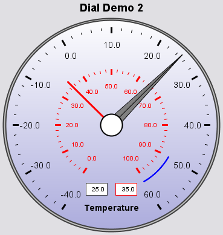

Package org.jfree.chart.plot.dial
Class DialPlot
- java.lang.Object
-
- org.jfree.chart.plot.Plot
-
- org.jfree.chart.plot.dial.DialPlot
-
- All Implemented Interfaces:
java.io.Serializable,java.lang.Cloneable,java.util.EventListener,AnnotationChangeListener,AxisChangeListener,MarkerChangeListener,LegendItemSource,DialLayerChangeListener,DatasetChangeListener,org.jfree.util.PublicCloneable
public class DialPlot extends Plot implements DialLayerChangeListener
A dial plot composed of user-definable layers. The example shown here is generated by theDialDemo2.javaprogram included in the JFreeChart Demo Collection:
- Since:
- 1.0.7
- See Also:
- Serialized Form
-
-
Field Summary
-
Fields inherited from class org.jfree.chart.plot.Plot
DEFAULT_BACKGROUND_ALPHA, DEFAULT_BACKGROUND_PAINT, DEFAULT_FOREGROUND_ALPHA, DEFAULT_INSETS, DEFAULT_LEGEND_ITEM_BOX, DEFAULT_LEGEND_ITEM_CIRCLE, DEFAULT_OUTLINE_PAINT, DEFAULT_OUTLINE_STROKE, MINIMUM_HEIGHT_TO_DRAW, MINIMUM_WIDTH_TO_DRAW, ZERO
-
-
Constructor Summary
Constructors Constructor Description DialPlot()Creates a new instance ofDialPlot.DialPlot(ValueDataset dataset)Creates a new instance ofDialPlot.
-
Method Summary
All Methods Static Methods Instance Methods Concrete Methods Modifier and Type Method Description voidaddLayer(DialLayer layer)Adds a layer to the plot and sends aPlotChangeEventto all registered listeners.voidaddPointer(DialPointer pointer)Adds a pointer to the plot and sends aPlotChangeEventto all registered listeners.voidaddScale(int index, DialScale scale)Adds a dial scale to the plot and sends aPlotChangeEventto all registered listeners.voiddialLayerChanged(DialLayerChangeEvent event)Receives notification when a layer has changed, and responds by forwarding aPlotChangeEventto all registered listeners.voiddraw(java.awt.Graphics2D g2, java.awt.geom.Rectangle2D area, java.awt.geom.Point2D anchor, PlotState parentState, PlotRenderingInfo info)Draws the plot.booleanequals(java.lang.Object obj)Tests thisDialPlotinstance for equality with an arbitrary object.DialLayergetBackground()Returns the background.DialLayergetCap()Returns the cap.ValueDatasetgetDataset()Returns the primary dataset for the plot.ValueDatasetgetDataset(int index)Returns the dataset at the given index.intgetDatasetCount()Returns the number of datasets.DialFramegetDialFrame()Returns the dial's frame.intgetLayerIndex(DialLayer layer)Returns the index for the specified layer.java.lang.StringgetPlotType()Returns the plot type.DialPointergetPointerForDataset(int datasetIndex)Returns the dial pointer that is associated with the specified dataset, ornull.intgetPointerIndex(DialPointer pointer)Returns the index for the specified pointer.DialScalegetScale(int index)Returns the scale at the given index.DialScalegetScaleForDataset(int datasetIndex)Returns the dial scale for a specific dataset.doublegetValue(int datasetIndex)Returns the value from the specified dataset.doublegetViewHeight()Returns the height of the viewing rectangle.doublegetViewWidth()Returns the width of the viewing rectangle.doublegetViewX()Returns the x-coordinate of the viewing rectangle.doublegetViewY()Returns the y-coordinate of the viewing rectangle.inthashCode()Returns a hash code for this instance.voidmapDatasetToScale(int index, int scaleIndex)Maps a dataset to a particular scale.static java.awt.geom.Rectangle2DrectangleByRadius(java.awt.geom.Rectangle2D rect, double radiusW, double radiusH)A utility method that computes a rectangle using relative radius values.voidremoveLayer(int index)Removes the layer at the specified index and sends aPlotChangeEventto all registered listeners.voidremoveLayer(DialLayer layer)Removes the specified layer and sends aPlotChangeEventto all registered listeners.voidremovePointer(int index)Removes the pointer at the specified index and sends aPlotChangeEventto all registered listeners.voidremovePointer(DialPointer pointer)Removes the specified pointer and sends aPlotChangeEventto all registered listeners.voidsetBackground(DialLayer background)Sets the background layer and sends aPlotChangeEventto all registered listeners.voidsetCap(DialLayer cap)Sets the cap and sends aPlotChangeEventto all registered listeners.voidsetDataset(int index, ValueDataset dataset)Sets a dataset for the plot.voidsetDataset(ValueDataset dataset)Sets the dataset for the plot, replacing the existing dataset, if there is one, and sends aPlotChangeEventto all registered listeners.voidsetDialFrame(DialFrame frame)Sets the dial's frame and sends aPlotChangeEventto all registered listeners.voidsetView(double x, double y, double w, double h)Sets the viewing rectangle, relative to the dial's framing rectangle, and sends aPlotChangeEventto all registered listeners.-
Methods inherited from class org.jfree.chart.plot.Plot
addChangeListener, annotationChanged, axisChanged, clone, createAndAddEntity, datasetChanged, drawBackground, drawBackgroundImage, drawNoDataMessage, drawOutline, fillBackground, fillBackground, fireChangeEvent, getBackgroundAlpha, getBackgroundImage, getBackgroundImageAlignment, getBackgroundImageAlpha, getBackgroundPaint, getDatasetGroup, getDrawingSupplier, getForegroundAlpha, getInsets, getLegendItems, getNoDataMessage, getNoDataMessageFont, getNoDataMessagePaint, getOutlinePaint, getOutlineStroke, getParent, getRectX, getRectY, getRootPlot, handleClick, isNotify, isOutlineVisible, isSubplot, markerChanged, notifyListeners, removeChangeListener, resolveDomainAxisLocation, resolveRangeAxisLocation, setBackgroundAlpha, setBackgroundImage, setBackgroundImageAlignment, setBackgroundImageAlpha, setBackgroundPaint, setDatasetGroup, setDrawingSupplier, setDrawingSupplier, setForegroundAlpha, setInsets, setInsets, setNoDataMessage, setNoDataMessageFont, setNoDataMessagePaint, setNotify, setOutlinePaint, setOutlineStroke, setOutlineVisible, setParent, zoom
-
-
-
-
Constructor Detail
-
DialPlot
public DialPlot()
Creates a new instance ofDialPlot.
-
DialPlot
public DialPlot(ValueDataset dataset)
Creates a new instance ofDialPlot.- Parameters:
dataset- the dataset (nullpermitted).
-
-
Method Detail
-
getBackground
public DialLayer getBackground()
Returns the background.- Returns:
- The background (possibly
null). - See Also:
setBackground(DialLayer)
-
setBackground
public void setBackground(DialLayer background)
Sets the background layer and sends aPlotChangeEventto all registered listeners.- Parameters:
background- the background layer (nullpermitted).- See Also:
getBackground()
-
getCap
public DialLayer getCap()
Returns the cap.- Returns:
- The cap (possibly
null). - See Also:
setCap(DialLayer)
-
setCap
public void setCap(DialLayer cap)
Sets the cap and sends aPlotChangeEventto all registered listeners.- Parameters:
cap- the cap (nullpermitted).- See Also:
getCap()
-
getDialFrame
public DialFrame getDialFrame()
Returns the dial's frame.- Returns:
- The dial's frame (never
null). - See Also:
setDialFrame(DialFrame)
-
setDialFrame
public void setDialFrame(DialFrame frame)
Sets the dial's frame and sends aPlotChangeEventto all registered listeners.- Parameters:
frame- the frame (nullnot permitted).- See Also:
getDialFrame()
-
getViewX
public double getViewX()
Returns the x-coordinate of the viewing rectangle. This is specified in the range 0.0 to 1.0, relative to the dial's framing rectangle.- Returns:
- The x-coordinate of the viewing rectangle.
- See Also:
setView(double, double, double, double)
-
getViewY
public double getViewY()
Returns the y-coordinate of the viewing rectangle. This is specified in the range 0.0 to 1.0, relative to the dial's framing rectangle.- Returns:
- The y-coordinate of the viewing rectangle.
- See Also:
setView(double, double, double, double)
-
getViewWidth
public double getViewWidth()
Returns the width of the viewing rectangle. This is specified in the range 0.0 to 1.0, relative to the dial's framing rectangle.- Returns:
- The width of the viewing rectangle.
- See Also:
setView(double, double, double, double)
-
getViewHeight
public double getViewHeight()
Returns the height of the viewing rectangle. This is specified in the range 0.0 to 1.0, relative to the dial's framing rectangle.- Returns:
- The height of the viewing rectangle.
- See Also:
setView(double, double, double, double)
-
setView
public void setView(double x, double y, double w, double h)
Sets the viewing rectangle, relative to the dial's framing rectangle, and sends aPlotChangeEventto all registered listeners.- Parameters:
x- the x-coordinate (in the range 0.0 to 1.0).y- the y-coordinate (in the range 0.0 to 1.0).w- the width (in the range 0.0 to 1.0).h- the height (in the range 0.0 to 1.0).- See Also:
getViewX(),getViewY(),getViewWidth(),getViewHeight()
-
addLayer
public void addLayer(DialLayer layer)
Adds a layer to the plot and sends aPlotChangeEventto all registered listeners.- Parameters:
layer- the layer (nullnot permitted).
-
getLayerIndex
public int getLayerIndex(DialLayer layer)
Returns the index for the specified layer.- Parameters:
layer- the layer (nullnot permitted).- Returns:
- The layer index.
-
removeLayer
public void removeLayer(int index)
Removes the layer at the specified index and sends aPlotChangeEventto all registered listeners.- Parameters:
index- the index.
-
removeLayer
public void removeLayer(DialLayer layer)
Removes the specified layer and sends aPlotChangeEventto all registered listeners.- Parameters:
layer- the layer (nullnot permitted).
-
addPointer
public void addPointer(DialPointer pointer)
Adds a pointer to the plot and sends aPlotChangeEventto all registered listeners.- Parameters:
pointer- the pointer (nullnot permitted).
-
getPointerIndex
public int getPointerIndex(DialPointer pointer)
Returns the index for the specified pointer.- Parameters:
pointer- the pointer (nullnot permitted).- Returns:
- The pointer index.
-
removePointer
public void removePointer(int index)
Removes the pointer at the specified index and sends aPlotChangeEventto all registered listeners.- Parameters:
index- the index.
-
removePointer
public void removePointer(DialPointer pointer)
Removes the specified pointer and sends aPlotChangeEventto all registered listeners.- Parameters:
pointer- the pointer (nullnot permitted).
-
getPointerForDataset
public DialPointer getPointerForDataset(int datasetIndex)
Returns the dial pointer that is associated with the specified dataset, ornull.- Parameters:
datasetIndex- the dataset index.- Returns:
- The pointer.
-
getDataset
public ValueDataset getDataset()
Returns the primary dataset for the plot.- Returns:
- The primary dataset (possibly
null).
-
getDataset
public ValueDataset getDataset(int index)
Returns the dataset at the given index.- Parameters:
index- the dataset index.- Returns:
- The dataset (possibly
null).
-
setDataset
public void setDataset(ValueDataset dataset)
Sets the dataset for the plot, replacing the existing dataset, if there is one, and sends aPlotChangeEventto all registered listeners.- Parameters:
dataset- the dataset (nullpermitted).
-
setDataset
public void setDataset(int index, ValueDataset dataset)
Sets a dataset for the plot.- Parameters:
index- the dataset index.dataset- the dataset (nullpermitted).
-
getDatasetCount
public int getDatasetCount()
Returns the number of datasets.- Returns:
- The number of datasets.
-
draw
public void draw(java.awt.Graphics2D g2, java.awt.geom.Rectangle2D area, java.awt.geom.Point2D anchor, PlotState parentState, PlotRenderingInfo info)
Draws the plot. This method is usually called by theJFreeChartinstance that manages the plot.- Specified by:
drawin classPlot- Parameters:
g2- the graphics target.area- the area in which the plot should be drawn.anchor- the anchor point (typically the last point that the mouse clicked on,nullis permitted).parentState- the state for the parent plot (if any).info- used to collect plot rendering info (nullpermitted).
-
getValue
public double getValue(int datasetIndex)
Returns the value from the specified dataset.- Parameters:
datasetIndex- the dataset index.- Returns:
- The data value.
-
addScale
public void addScale(int index, DialScale scale)
Adds a dial scale to the plot and sends aPlotChangeEventto all registered listeners.- Parameters:
index- the scale index.scale- the scale (nullnot permitted).
-
getScale
public DialScale getScale(int index)
Returns the scale at the given index.- Parameters:
index- the scale index.- Returns:
- The scale (possibly
null).
-
mapDatasetToScale
public void mapDatasetToScale(int index, int scaleIndex)
Maps a dataset to a particular scale.- Parameters:
index- the dataset index (zero-based).scaleIndex- the scale index (zero-based).
-
getScaleForDataset
public DialScale getScaleForDataset(int datasetIndex)
Returns the dial scale for a specific dataset.- Parameters:
datasetIndex- the dataset index.- Returns:
- The dial scale.
-
rectangleByRadius
public static java.awt.geom.Rectangle2D rectangleByRadius(java.awt.geom.Rectangle2D rect, double radiusW, double radiusH)
A utility method that computes a rectangle using relative radius values.- Parameters:
rect- the reference rectangle (nullnot permitted).radiusW- the width radius (must be > 0.0)radiusH- the height radius.- Returns:
- A new rectangle.
-
dialLayerChanged
public void dialLayerChanged(DialLayerChangeEvent event)
Receives notification when a layer has changed, and responds by forwarding aPlotChangeEventto all registered listeners.- Specified by:
dialLayerChangedin interfaceDialLayerChangeListener- Parameters:
event- the event.
-
equals
public boolean equals(java.lang.Object obj)
Tests thisDialPlotinstance for equality with an arbitrary object. The plot's dataset(s) is (are) not included in the test.
-
hashCode
public int hashCode()
Returns a hash code for this instance.- Overrides:
hashCodein classjava.lang.Object- Returns:
- The hash code.
-
getPlotType
public java.lang.String getPlotType()
Returns the plot type.- Specified by:
getPlotTypein classPlot- Returns:
"DialPlot"
-
-